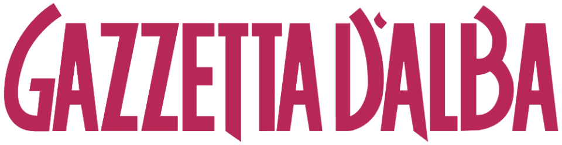
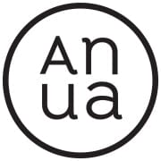
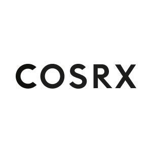

대표 로고대표 브랜드 마크
대표 로고대표 브랜드 마크홈 > 브랜드 매거진 > 라운드랩
라운드랩
라운드랩(ROUND LAB)은 서린컴퍼니가 2017년 선보인 대한민국의 저자극 스킨케어 브랜드다. '1025 독도 토너' 등 순한 기초 라인으로 알려진 클린 뷰티 브랜드다.
산업 분야 뷰티·퍼스널케어 · 공개 등급 자료 기반 · 브랜드 평가 4.2 ★
한눈에 보는 브랜드
라운드랩은 '피부가 좋아지는 화장품'을 표방하며 2016년 출범한 한국 스킨케어 브랜드로, 운영사 서린컴퍼니는 2017년 강원 춘천에서 법인화됐다. 첫 전환점은 독도 해양심층수를 담은 1025 독도 토너의 저자극 히트였고, 두 번째는 자작나무 수분 라인과 선케어로의 확장이었다.
2020년 약 363억원이던 매출은 2024년 약 1,961억원, 영업이익 약 735억원으로 불어나며 80여 개국 수출 규모의 인디 더마 강자로 성장했다.
브랜드 관점
닥터지·토리든·메디힐·달바 등 올리브영 1,000억원대 인디 더마 군과 한 무대에서 겨루는 라운드랩의 차별점은, 성분 가짓수를 줄인 저자극 처방을 한국 각 지역의 청정 원료 서사와 묶어낸 데 있다. 독도·울릉 해양심층수, 인제 자작나무 수액, 양양 소나무처럼 원산지를 제품명에 새겨 민감성 소비자의 신뢰와 국산 이미지를 함께 확보했다.
2024년 매출 70% 급증과 30%대 영업이익률은 광고비를 태우는 마케팅형 인디와 달리 수익성에 기반한 성장임을 보여준다. 2024년 한국이 미국 화장품 수입국 1위로 올라서고 2025년 K뷰티 수출이 114억 달러로 사상 최대를 찍은 흐름 속에서, 코스트코·월마트 등 북미 오프라인 진입과 아마존 고성장은 라운드랩을 내수 강자에서 수출 브랜드로 재배치하는 신호다.
2025년 구다이글로벌로의 약 6,000억원대 손바뀜은 이 글로벌 확장을 가속할 자본과 유통 레버리지로 해석된다.
시작과 성장
라운드랩은 2010년대 중반, 합리적 가격과 단순한 성분표를 앞세운 인디 더마 스킨케어가 올리브영을 무대로 떠오르던 시기에 등장했다. 화려한 광고 대신 '피부가 좋아진다'는 약속에 집중한 브랜드는 2016년 시장에 나왔고, 운영사 서린컴퍼니는 2017년 강원 춘천에 자리 잡았다.
첫 전환점은 독도의 날 10월 25일에서 이름을 딴 1025 독도 라인으로, 해양심층수를 담은 저자극 토너가 민감성 피부 사용자의 입소문을 타며 올리브영 토너 카테고리 장기 1위로 올라섰다. 두 번째 전환점은 인제산 자작나무 수액을 쓴 자작나무 수분 라인과 선케어로의 확장이었고, 자작나무 수분 선크림은 선케어 부문에서 다년 연속 1위에 올랐다.
이후 소나무 시카, 약콩 판테놀, 동백 콜라겐, 해풍 쑥 진정 등 지역 원료별 라인으로 포트폴리오를 넓혔으며, 2024년 전후로 북미 대형 유통과 아마존을 통한 해외 확장에 본격 진입하면서 춘천 기반의 청정 콘셉트를 글로벌 무대로 끌어올렸다.
브랜드 아이덴티티
브랜드의 핵심 가치는 '동그란 세상을 조금 더 아름답게'라는 지향처럼 정직한 자연 원료와 저자극, 그리고 지속 가능성에 있다. 비주얼은 흰 바탕에 절제된 타이포, 산지를 떠올리게 하는 청록·블루 톤, 독도를 그려 넣은 단상자처럼 깨끗하고 담백한 인상을 준다.
핵심 타깃은 자극에 예민하고 성분을 따져 보는 20~30대 민감성 피부 소비자이며, 최근에는 K뷰티에 입문하는 해외 소비자로 폭이 넓어졌다. 브랜드 보이스는 과장 없이 차분하고 신뢰감 있는 어조로, 효능을 떠벌리기보다 매일 쓰며 피부가 편해지는 경험을 담담하게 권한다.
확장 지식
2017년 출범했으며 '1025 독도 토너' 등 저자극 클린 뷰티 제품으로 알려졌다.
제품과 서비스
사람들
운영사는 서린컴퍼니다.
현재 상태
운영사는 강원 춘천에 기반한 서린컴퍼니이며, 라운드랩은 그 대표 브랜드다. 2025년 7월 인디 K뷰티 인수 큰손인 구다이글로벌이 지분 100%를 약 6,000억원대에 사들이는 본계약을 체결해 운영 주체가 이동하는 단계다.
매출은 2020년 약 363억원, 2023년 약 1,156억원(영업이익 약 553억원), 2024년 약 1,961억원(영업이익 약 735억원)으로 집계됐다. 2025년 연간 확정 실적은 미공개.
수출은 80여 개국 규모다.
타임라인
정리된 연도형 이벤트가 없습니다.
BI/CI 변천사
대표 로고대표 브랜드 마크함께 읽을 브랜드
 뷰티·퍼스널케어 · 디렉토리올리브영
뷰티·퍼스널케어 · 디렉토리올리브영올리브영은 대한민국의 헬스앤뷰티 리테일 브랜드입니다. 화장품, 스킨케어, 건강식품, 퍼스널케어 상품을 큐레이션하며 K뷰티 유통의 대표 접점으로 자리 잡았습니다.

뷰티·퍼스널케어 · 자료 기반달바달바(d'Alba)는 달바글로벌이 전개하는 대한민국의 프리미엄 비건 스킨케어 브랜드다. 2016년 론칭했으며 화이트 트러플 성분의 미스트 세럼으로 글로벌 베스트셀러를...
DG
닥터지
뷰티·퍼스널케어 · 자료 기반닥터지닥터지(Dr.G)는 고운세상코스메틱이 운영하는 더마코스메틱 스킨케어 브랜드다.
메디
메디힐
뷰티·퍼스널케어 · 디렉토리메디힐메디힐는 뷰티·퍼스널케어 브랜드로, 성분, 사용감, 패키지, 이미지 언어가 구매 판단에 직접 연결되는 영역입니다.
토리
토리든
뷰티·퍼스널케어 · 디렉토리토리든토리든는 뷰티·퍼스널케어 브랜드로, 성분, 사용감, 패키지, 이미지 언어가 구매 판단에 직접 연결되는 영역입니다.

뷰티·퍼스널케어 · 자료 기반아누아아누아(Anua)는 더파운더즈가 전개하는 대한민국의 저자극 스킨케어 브랜드다. 어성초를 핵심 성분으로 한 진정 토너로 미국·일본 등에서 인기를 얻은 K-뷰티 브랜드다...

뷰티·퍼스널케어 · 자료 기반코스알엑스코스알엑스(COSRX)는 2013년 설립된 한국의 민감성 피부용 스킨케어 브랜드로, 현재 아모레퍼시픽 자회사다.
 뷰티·퍼스널케어 · 자료 기반설화수
뷰티·퍼스널케어 · 자료 기반설화수설화수(Sulwhasoo)는 아모레퍼시픽이 1997년 론칭한 대한민국의 한방 럭셔리 스킨케어 브랜드다. 한방 원료와 프리미엄 포지셔닝으로 아모레퍼시픽을 대표하는 럭셔...